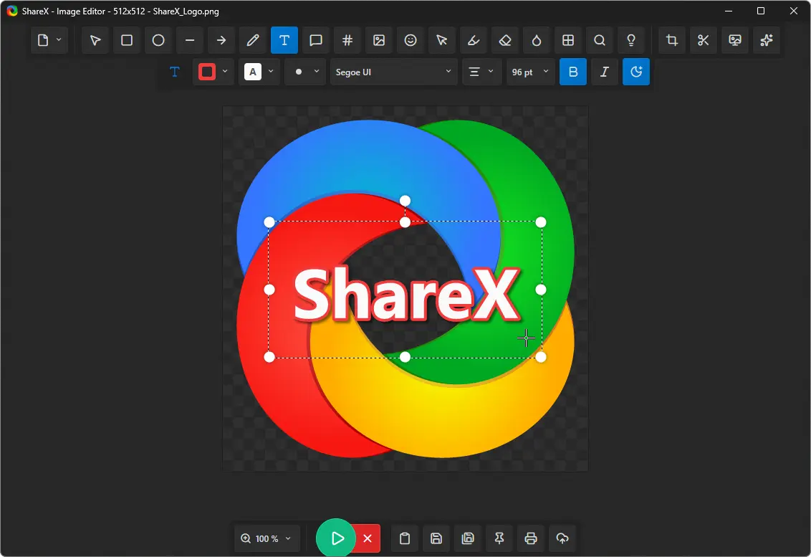

ShareX
Chụp màn hình, quay video màn hình miễn phí, mã nguồn mở, nhiều tính năng mạnh mẽ.

ShareX là công cụ chụp màn hình và quay video màn hình mã nguồn mở, hoàn toàn miễn phí. Đây là một trong những phần mềm chụp màn hình mạnh mẽ nhất hiện nay.
Phần mềm cho phép bạn chụp ảnh màn hình toàn bộ, một vùng chọn, một cửa sổ hoặc cuộn trang web. Ngoài ra, ShareX còn hỗ trợ quay video màn hình, tạo ảnh GIF động, nhận dạng văn bản (OCR) và tự động tải lên nhiều dịch vụ lưu trữ khác nhau như Imgur, Google Photos, Dropbox.